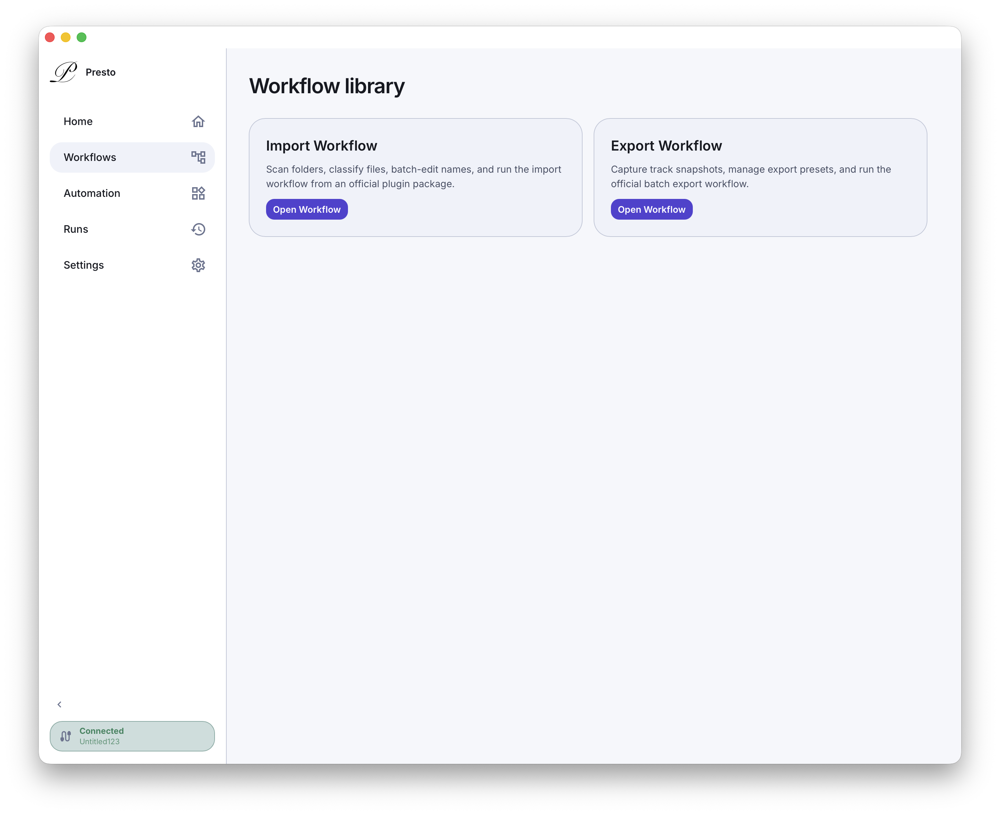
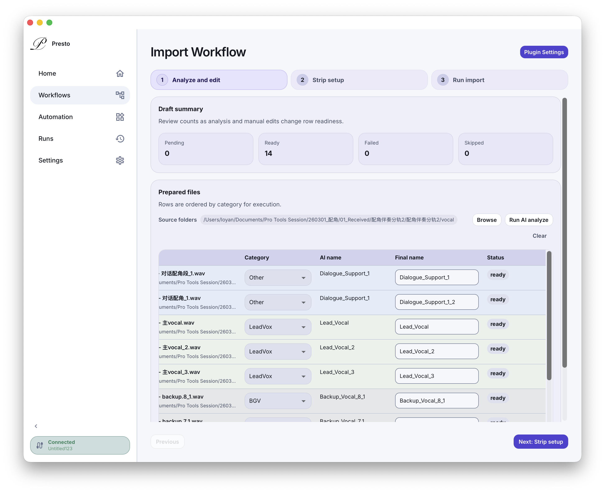
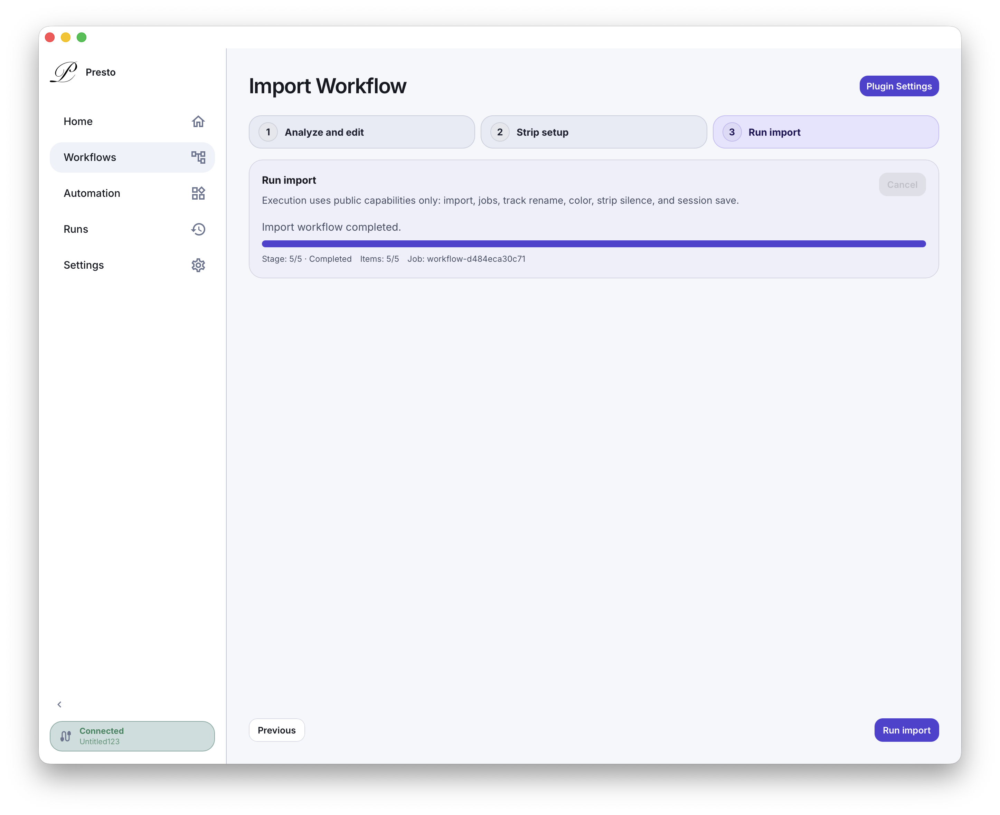

Bring files in fast
Move through large imports without the usual drag.
Presto
Bring files in faster. Keep sessions cleaner. Cut down repeat work.



Why Presto
Less clicking. Less cleanup. More focus on the actual work.
Move through large imports without the usual drag.
Stay on top of names, colors, and session structure.
Reduce the slow, repetitive steps that pile up through the day.
What You Get
Bring in large groups of files with less setup.
Handle naming, organization, and repetitive prep in one flow.
Keep sessions easier to review, pass on, and pick up again later.
Get the same clean result without relying on memory every time.
Made for Real Session Work
Presto is for the work that happens over and over again and still needs to stay sharp every time.
Request Early Access
Built for people who want speed, order, and fewer manual passes.